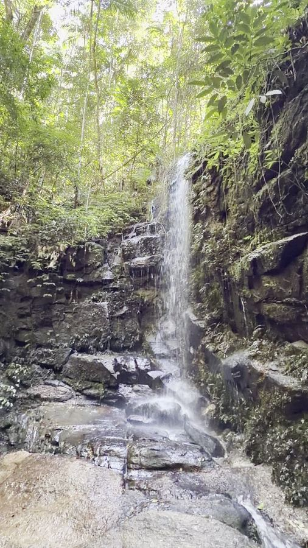
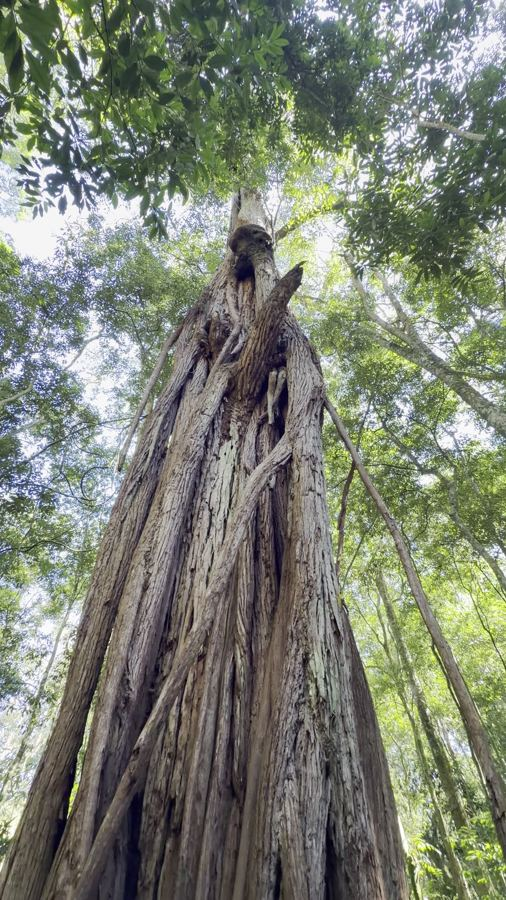

EXPERIÊNCIA RIO IA
Floresta da Tijuca
e suas cachoeiras
Uma das maiores florestas urbanas do mundo, a minutos da praia: trilhas, cachoeiras e mirantes.
TrilhasCachoeirasVista ChinesaGuia o passeio todo
VALORA partir de R$ 200
Por pessoa, conforme o tamanho do grupo e o transporte.
A experiência
Trilhas na mata
Caminhos entre árvores gigantes e pássaros da Mata Atlântica, no ritmo do grupo.
As cachoeiras
Paradas nas cachoeiras para se refrescar e tirar as melhores fotos.
Vista Chinesa
O mirante com a Lagoa e o Pão de Açúcar ao fundo.
Momentos reais dos nossos passeios
Cascatinha Taunay

Cachoeiras escondidas
Árvores gigantesFauna da floresta
 Lagos na mata
Lagos na mata Chegando na cachoeira
Chegando na cachoeira Clima bom
Clima bom Clientes na cachoeira
Clientes na cachoeiraFotos e vídeos reais dos nossos passeios.
O que inclui
- Guia acompanhando o passeio todo
- Trilhas conforme o nível do grupo
- Paradas nas cachoeiras
- Mirante Vista Chinesa
- Atendimento pelo WhatsApp do início ao fim
O que levar
- Tênis confortável
- Roupa de banho e toalha pequena
- Água e repelente
Como reservar
Reserva: confirmada com o pagamento de 100%, por Pix ou cartão (no cartão +5%). Confirmamos tudo pelo WhatsApp.
Reservar pelo WhatsApp